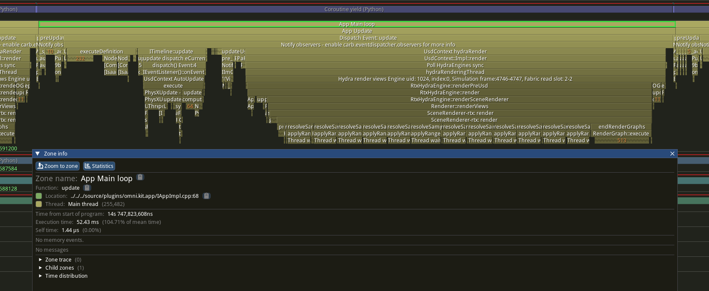
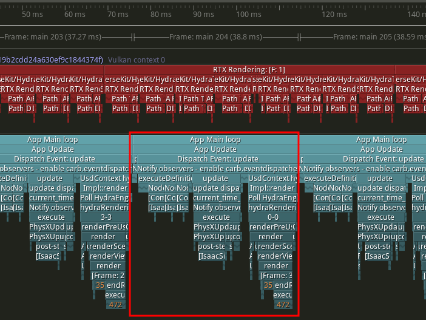
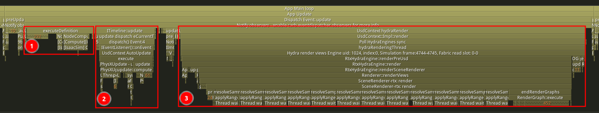
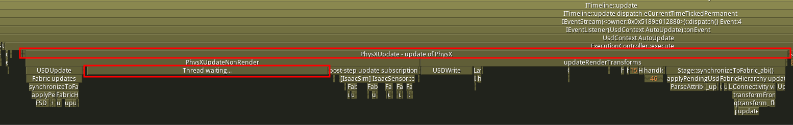
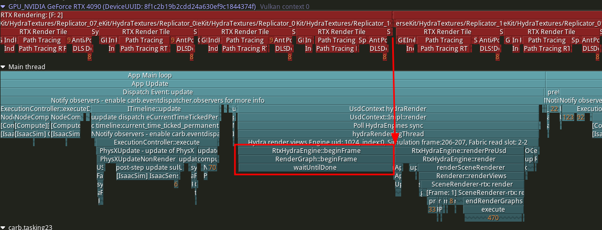

Profiling Performance Using Tracy#
Learning Objectives#
This tutorial shows how to get a high-level live CPU/GPU performance overview of NVIDIA Isaac Sim using the Tracy profiler.
After this tutorial, you will be able to gauge the performance of various components of the application, add profiling zones and understand the relative significance of each zone.
Tracy also has a lot of other useful features for performance analysis, not covered in this tutorial. Refer to the Tracy documentation for more details on analyzing zone stats, filtering, and other features.
Note
Profiling the application can add some overhead to the simulation. When evaluating performance, a good workflow is to profile the application, try optimizations, and then profile again to see the impact. However, when evaluating final performance, disable profiling to get the most accurate results.
With already fast code, sometimes profiling itself is the bottleneck. Disabling profiling and running the application without it can help identify if this is the case.
15-20 Minutes Tutorial
Getting Started#
Prerequisites
Review the Core API Hello World and GUI Tutorial series Troubleshooting prior to beginning this tutorial.
Have an understanding of various workflows. Refer to Workflows for details.
Launching Tracy Profiler#
The first step of profiling the application is to open the Tracy profiler. There are a few different ways to do this.
It is recommended to use the Tracy binary that comes with NVIDIA Isaac Sim. To do this, you need to enable the
omni.kit.profiler.tracyextension from the registry which contains the currently supported version of Tracy. To do this, navigate to Windows > Extensions, search foromni.kit.profiler.tracyextension and enable it. If you need the extension to be enabled by default, you can check the AUTOLOAD box as well. This will add a new Profiler menu item from where you can Launch the profiler or Launch and Connect an instance of the Tracy UI and stream the output of the NVIDIA Isaac Sim to it.Another convenient approach to open the Tracy applicaton is to use the binary that is used by the
omni.kit.profiler.tracyextension manually. The binary is located inside the extension folder, e.g../extscache/omni.kit.profiler.tracy-1.2.0+lx64/bin/Tracy
Note
You can keep using the same instance of the profiler even if you close the NVIDIA Isaac Sim application. This is useful to keep Tracy profiler ready when you profile the Application in the standalone workflow. However the same Isaac Sim instance can only be connected to Tracy once. If you need to connect to Tracy again, you will need to restart the Isaac Sim instance.
Using Tracy Profiler#
GUI Workflow#
Enable/Open Tracy based on the instructions above.
Launch and Connect the Tracy profiler will open the profiler windows.
Let the simulation run for a few seconds to collect some data.
Press Stop in the profiler window to stop the profiler. You can also press Pause if you wish to continue profiling later.You can press Save trace from the “net icon” to save the trace file.
Note
Pressing Stop will end the profiling session. In order to continue profiling, you will need to launch a new instance of Isaac Sim. Using Pause and Resume will allow you to continue profiling from the same session.
Standalone Workflow#
Enable/Open Tracy based on the instructions above. You can then close the Isaac Sim application, the Tracy profiler window will remain open.
Note that you need to change the
SimulationAppparameters of your standalone script to include the profiler_backend parameter as follows. This adds some useful capture options for the profiler.from isaacsim import SimulationApp simulation_app = SimulationApp({"headless": False, "profiler_backend": ["tracy"]}) # Add your standalone script here
Launch your standalone script with
--enable omni.kit.profiler.tracyas follows:python.sh PATH_TO_STANDALONE_EXAMPLE --enable omni.kit.profiler.tracyOnce the application is running you can Connect the Tracy profiler instance to get the live performance data.
Note
If you are running in non-headless mode you can use the Tracy profiler by following the GUI Workflow instructions above.
For more fine-grained control, it is possible to customize the profiler output by adding additional command line arguments which works similarly for any kit-based app. For instance, you can run a standalone example with Tracy enabled as follows:
python.sh PATH_TO_STANDALONE_EXAMPLE --enable omni.kit.profiler.tracy \
--/profiler/enabled=true \
--/app/profilerBackend=tracy \
--/privacy/externalBuild=0 \
--/app/profileFromStart=true \
--/profiler/gpu=true \
--/profiler/gpu/tracyInject/enabled=true
--/profiler/gpu/tracyInject/msBetweenClockCalibration=0 \
--/app/profilerMask=1 \
--/profiler/channels/carb.tasking/enabled=false \
--/profiler/channels/carb.events/enabled=false \
--/plugins/carb.profiler-tracy.plugin/fibersAsThreads=false
Note
Above --/profiler/enabled and --/app/profilerBackend are the only necessary command line arguments, and the rest are optional parameters to customize the profiler output. --/privacy/externalBuild=0 is necessary to capture traces with F5 key.
All these parameters (with the default values mentioned above) are already included in the first method described above.
Adding Profiling Zones#
Python#
To add profiler zones in your Python script, you can use the @carb.profiler.profile function decorator to add a zone for a specific function.
import carb @carb.profiler.profile def some_function(): # function code here return
More fine-grained control can be achieved by encapsulating the required code in a pair of carb.profiler.begin and carb.profiler.end calls to manually start and stop a zone as follows:
import carb def some_function(): # Some code that shouldn't be included in the profiler zone carb.profiler.begin(1, "zone title") # code to profile carb.profiler.end(1)
Python profiles can be enabled by adding the export CARB_PROFILING_PYTHON=1 environment variable before launching the Isaac Sim application. This will enable capture of Python code at the cost of increased overhead.
C++#
To add profiler zones in your C++ code, you can use the CARB_PROFILE_ZONE macro to add a zone for a specific scope as follows:
#include <carb/logging/Log.h>
void some_function() {
// mask is a integer mask that can be used to filter the profiler capture. It's recommended to use 0 (default) or 1 for the mask.
CARB_PROFILE_ZONE(mask, "zone title");
{
// code to profile
}
}
Note
The --/app/profilerMask command line argument can be used to filter the profiler capture based on the mask value. Modify this setting to filter for specific zones of interest and avoid capturing unnecessary zones.
Understanding Tracy Profiler Output#
The Tracy profiler outputs a hierarchical view of captured zones, split across threads and fibers for CPU work and on specific GPU contexts for GPU work.
App Main loop#
In Isaac Sim, the top level zone indicates one iteration of the main run loop, denoted as App Main loop. The duration of this zone is the wall-clock time per app update (loop + timeline + render). It is not the physics step rate (set on the Physics Scene’s timeStepsPerSecond) nor the timeline per-tick dt (1 / timeCodesPerSecond under fixed time stepping). See Architecture: Timeline, Physics, and the Renderer for how the three rates interact.
Note
The App Update zone is one level lower but effectively equivalent to the App Main loop zone.
{kind=link}

A broad, high-level view of the hierarchy is shown below:
- App Update
Pre-Update Events
- Update Events
- ExecutionController: Definition
Post-Process Graphs
- Timeline Update
Physics Step
Transform Updates + Synchronizations
- Compute Graphs
onPlaybackTick Node Executions
- Rendering
Render Launch For All Render Products
Post-Update Events
Note
Generally, the Pre-Update and Post-Update events contain things like viewport updates, setup/teardown operations, etc. The Update event contains the main simulation logic and is usually the main focus of performance profiling.
{kind=link}

One App Main loop zone contains one frame of the simulation. The GPU work is shown above the main thread in an individual zone hierarchy. Multi-GPU systems will display a separate zone hierarchy for each GPU.#
{kind=link}

Zooming into a single frame shows the breakdown the simulation work. Selection 1 shows the post-process graphs, selection 2 shows the timeline update step, and selection 3 shows the CPU-side rendering work.#
ExecutionController#
This zone generally contains a lot of node executions for post-processing graphs, often part of Replicator logic for processing rendering data. It also contains the main processing logic for the RTX Lidar sensor if being used.
Timeline Update Step#
The ITimeline::update zone is inclusive of the main simulation work for the frame. This includes the physics step (or multiple steps given a smaller physics step size), transform updates, and the writes to USD/fabric.
The typical structure of this zone is show below:
USD Update
Physics Step(s)
Post-Step Update (Physics-based sensors: IMU, Contact, etc.)
Update Render Transforms (USD writes and Fabric synchronization)
Compute Graphs#
This zone contains the execution of nodes that are dependent on the physics step. Most notably, this includes nodes that use onPlaybackTick to execute.
Rendering#
This zone contains the execution of CPU-side rendering logic. This includes preparing views, updating render product prims, and launching the rendering pipeline on the GPU. The rendering work on the GPU can be visualized in Tracy’s GPU view by setting the --/profiler/gpu=true and --/profiler/gpu/tracyInject/enabled=true command line arguments documented above.
Analyzing Bottlenecks#
The most common bottlenecks to look for are in the physics computation and rendering execution.
Physics Bottlenecks#
Physics bottlenecks are typically indicated by a long duration in the Thread waiting… zone under the PhysXUpdateNonRender zone. Looking through the many threads Tracy displays, you can find the thread that is completing the physics work (whether a GPU callback or CPU-side computation). The physics compute zone returns to the main thread when complete, allowing the Thread waiting… to complete.
This can be caused by a variety of factors, including:
Physics Backend
Physics Objects
Physics Step Size
Please refer to Physics Simulation Optimizations for recommendations on optimizing physics performance.
{kind=link}

Rendering Bottlenecks#
Rendering bottlenecks are often characterized by a waitUntilDone zone on the main CPU thread. This zone indicates that the next render step is waiting on the previous render step to complete. This presents as a CPU stall, waiting for the GPU to complete the previous render step.
This can be mitigated by increasing the number of GPUs used, assuming a multi-GPU system is available.
Other optimizations to reduce rendering load can be found in Scene and Rendering Optimizations. For example, simplifying textures/materials, reducing lighting, or disabling unneeded effects like translucency or reflections.
{kind=link}

Example of a GPU-bound case where the main thread is waiting for the GPU to complete the previous render step before beginning the next render step.#
Summary#
This tutorial covered the following topics:
How to use the Tracy profiler in NVIDIA Isaac Sim in both GUI and standalone workflows.
How to add new profiling zones to gauge the performance of your code Python and C++.
How to identify common bottlenecks in the simulation execution.